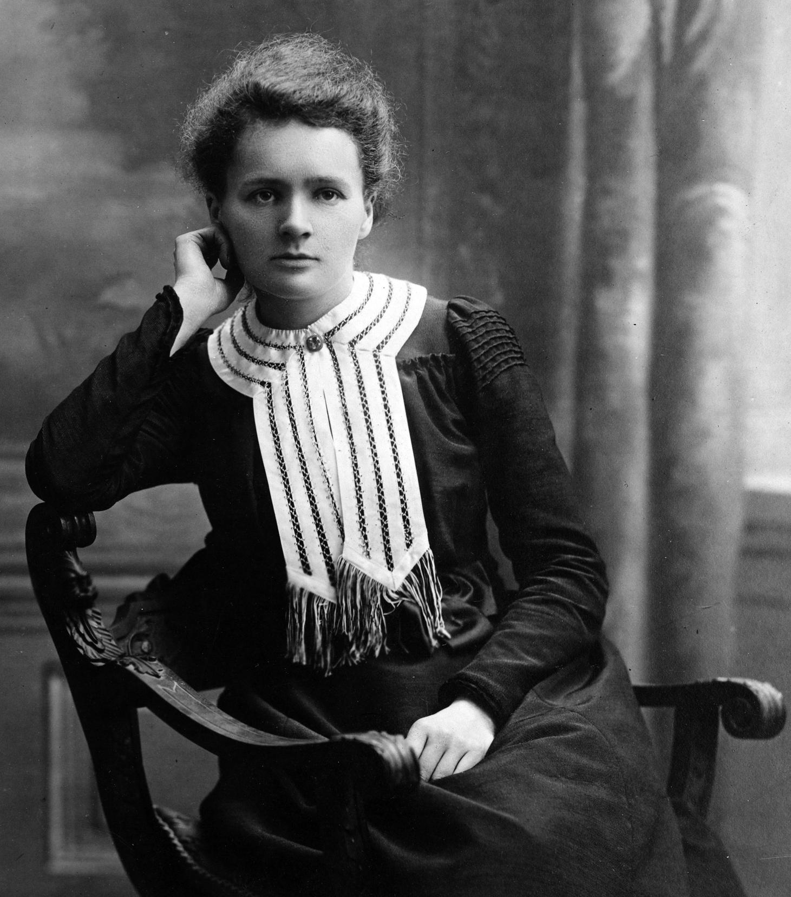

Early Years
Born Maria Skłodowska in Warsaw in 1867, Curie grew up in a family that placed enormous value on education. At a time when women faced major barriers to higher education in her homeland, she remained determined to continue learning.
PIONEER • SCIENTIST • VISIONARY
A life devoted to discovery, scientific courage, and the pursuit of knowledge.
Explore her story ↓
Marie Curie transformed the world of science through her relentless curiosity and groundbreaking research into radioactivity.
Her work challenged scientific assumptions of her era and opened new paths in physics, chemistry, and medicine. She became one of the most influential scientists in modern history.
HER STORY
02 / BIOGRAPHY
Born Maria Skłodowska in Warsaw in 1867, Curie grew up in a family that placed enormous value on education. At a time when women faced major barriers to higher education in her homeland, she remained determined to continue learning.
She moved to Paris and enrolled at the Sorbonne, studying physics and mathematics. Despite financial hardship and demanding living conditions, she performed exceptionally well and established the academic foundation for her scientific career.
Working with Pierre Curie, she investigated unusual radiation emitted by certain materials. Their experiments contributed to the discovery of polonium and radium and helped establish radioactivity as a major field of scientific study.
Curie's scientific accomplishments earned her Nobel Prizes in both Physics and Chemistry. During the First World War, she also promoted mobile X-ray services that helped doctors examine wounded soldiers closer to the battlefield.
SCIENTIFIC MILESTONES
Curie's career was shaped by years of experimentation, careful observation, and an extraordinary commitment to scientific discovery.
THE JOURNEY
03 / TIMELINE
Maria Skłodowska was born in Warsaw. Her family encouraged education despite the political and social challenges surrounding Poland at the time.
Curie moved to Paris and began studying at the University of Paris, pursuing physics and mathematics.
Marie and Pierre Curie announced the discovery of polonium and later identified radium while studying radioactive materials.
Curie shared the Nobel Prize in Physics with Pierre Curie and Henri Becquerel for their contributions to understanding radiation.
Curie received a second Nobel Prize, this time in Chemistry, recognizing her work involving radium and polonium.
Curie helped organize mobile radiography units, making X-ray examinations more accessible for wounded soldiers.
Nothing in life is to be feared, it is only to be understood.
— MARIE CURIE
BEYOND HER TIME
04 / LEGACY
Marie Curie's influence reaches far beyond the discoveries that earned her international recognition.
Her research helped establish radioactivity as a major area of scientific investigation and influenced later developments in medical diagnosis and treatment.
Her life also became an example of perseverance. Curie's career demonstrated how intellectual curiosity, rigorous research, and persistence could overcome significant social and professional barriers.
Helped establish radioactivity as a major scientific field.
Her research contributed to radiation-based medical applications.
Became a lasting symbol of scientific determination and curiosity.
RESEARCH & ATTRIBUTION
This tribute page was created for educational purposes. Historical information was researched and paraphrased from reputable reference sources.
Replace this text with the exact Wikimedia Commons file name, creator and license information for the image you use in the assets folder.